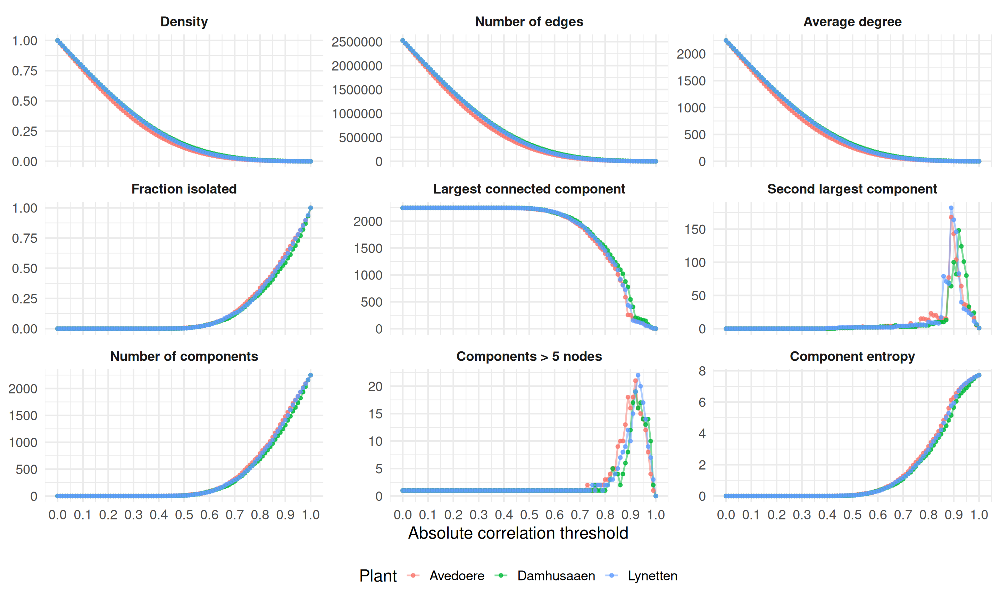
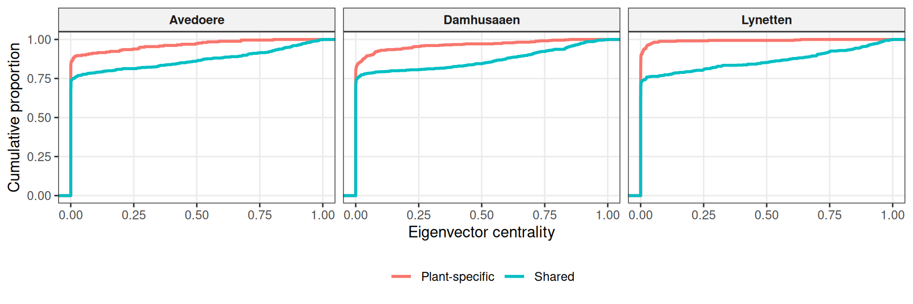
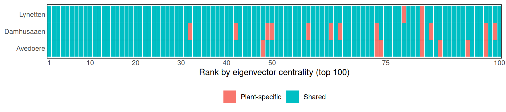
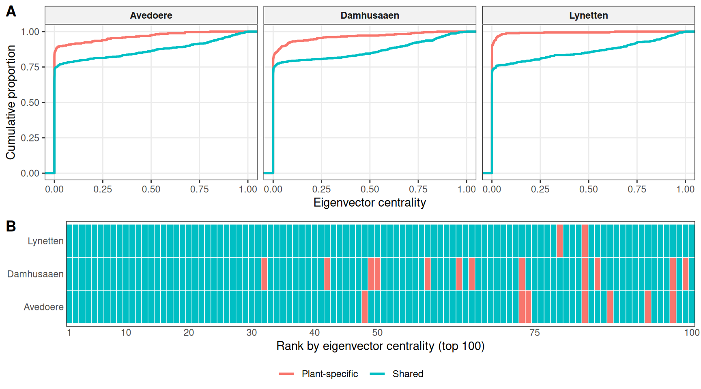
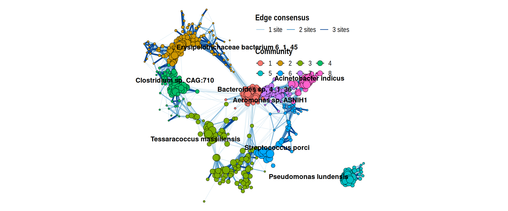
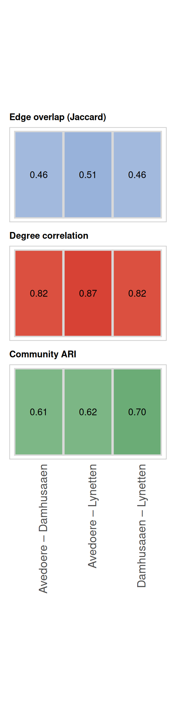
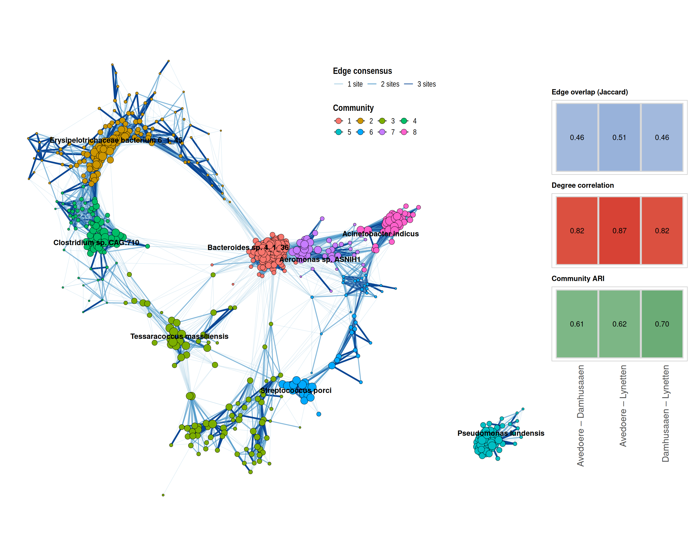
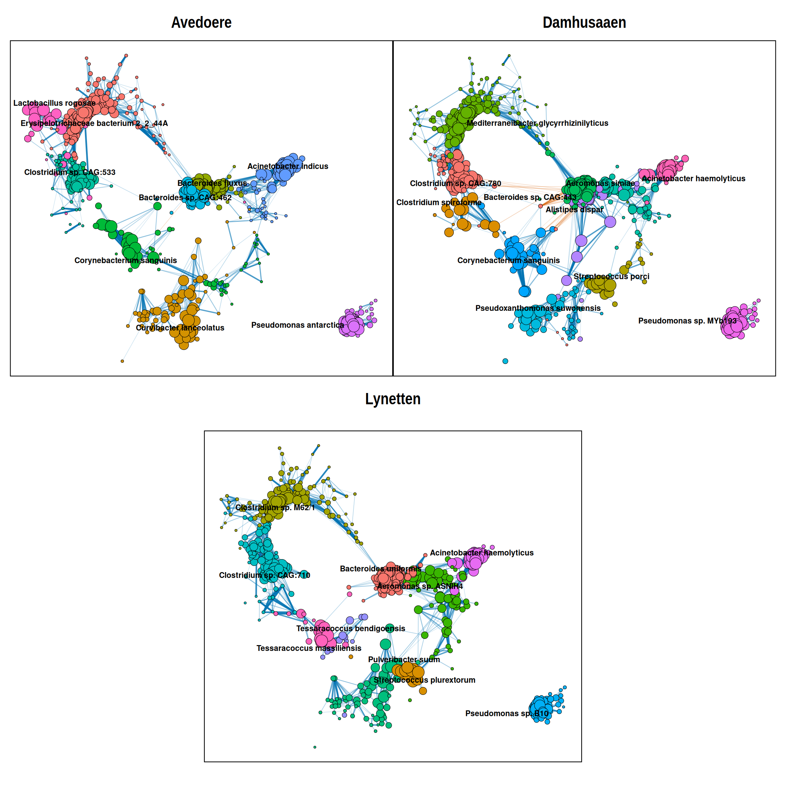
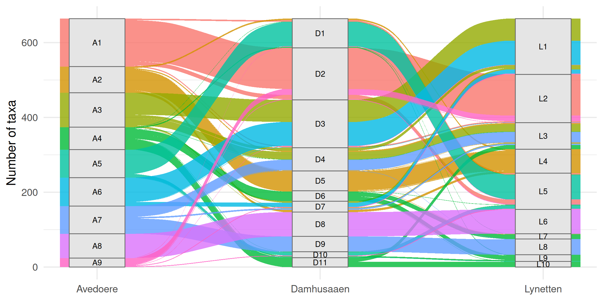
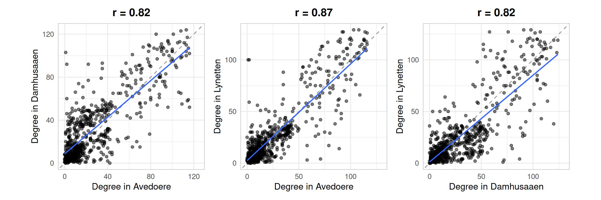

library(tidyverse)
library(mgnet)
library(igraph)
library(tidygraph)
library(ggraph)
library(patchwork)
library(ggalluvial)test
Libraries
Read and Clean
plants_cph <- read_rds("../data/processed/sewage_cph_mgnet.rds") %>%
split_meta(plant)
plants_cph_filt <- plants_cph %>%
update_mgnet(rela = abun / rowSums(abun)) %>%
mutate_meta(sample_sum = sum(abun)) %>%
filter_taxa(sum(abun >= 10) / n() >= .25) %>%
mutate_meta(lost_counts = 1 - (sum(abun) / sample_sum))meta(plants_cph_filt, .collapse = T) %>% pull(lost_counts) %>% summary Min. 1st Qu. Median Mean 3rd Qu. Max.
0.0002594 0.0005613 0.0010485 0.0016153 0.0017011 0.0192891 common_taxa <- taxa_id(plants_cph_filt) %>% reduce(intersect)plants_cph_common <- plants_cph_filt %>%
mutate_meta(sample_sum_filt = sum(abun)) %>%
filter_taxa(taxa_id %in% common_taxa) %>%
mutate_meta(lost_counts_common = 1 - (sum(abun) / sample_sum_filt))meta(plants_cph_common, .collapse = TRUE) %>%
pull(lost_counts_common) %>%
summary() Min. 1st Qu. Median Mean 3rd Qu. Max.
0.0002794 0.0014243 0.0024744 0.0050698 0.0047790 0.0409704 plants_cph_common <- plants_cph_common %>%
update_mgnet(norm = abun %>%
zCompositions::cmultRepl(method = "CZM",
z.delete = F,
z.warning = 1) %>%
vegan::decostand(method = "clr"))No. adjusted imputations: 4
No. adjusted imputations: 58 Diagnosis threshold value
assoc_list <- norm(plants_cph_common) %>%
purrr::map(\(clr) cor(clr))diagnosis_from_assoc <- function(assoc, thr) {
adj <- assoc
diag(adj) <- 0
adj[abs(adj) <= thr] <- 0
adj <- (adj + t(adj)) / 2
g <- graph_from_adjacency_matrix(
adjmatrix = adj, mode = "undirected",
weighted = TRUE, diag = FALSE)
deg <- degree(g)
comp <- components(g)
comp_sizes <- sort(comp$csize, decreasing = TRUE)
n_edges <- gsize(g)
tibble(
threshold = thr,
n_nodes = gorder(g),
n_edges = n_edges,
density = edge_density(g, loops = FALSE),
avg_degree = mean(deg),
frac_isolated = mean(deg == 0),
n_components = comp$no,
n_components_gt5 = sum(comp$csize > 5),
lcc_size = max(comp$csize),
lcc_fraction = max(comp$csize) / gorder(g),
second_lcc_size = if (length(comp_sizes) >= 2) comp_sizes[2] else 0L,
second_lcc_fraction = if (length(comp_sizes) >= 2) comp_sizes[2] / gorder(g) else 0,
component_entropy = vegan::diversity(comp$csize),
n_positive_edges = if (n_edges > 0) sum(E(g)$weight > 0) else 0L,
n_negative_edges = if (n_edges > 0) sum(E(g)$weight < 0) else 0L,
frac_positive = if (n_edges > 0) mean(E(g)$weight > 0) else NA_real_,
frac_negative = if (n_edges > 0) mean(E(g)$weight < 0) else NA_real_,
components_obj = list(comp)
)
}cache_dir <- "../cache"
cache_file <- file.path(cache_dir, "triplicate_diagnosis.rds")
if (!dir.exists(cache_dir)) {
dir.create(cache_dir, recursive = TRUE)
}
if (file.exists(cache_file)) {
message("Loading diagnostics from cache...")
diag_tbl <- readRDS(cache_file)
} else {
message("Cache not found. Computing diagnostics...")
future::plan(future::multisession)
thr_grid <- seq(0.0, 1, by = 0.01)
diag_tbl <- purrr::imap_dfr(assoc_list, function(assoc, plant) {
furrr::future_map_dfr(thr_grid, ~ diagnosis_from_assoc(assoc, .x)) %>%
dplyr::mutate(plant = plant, .before = 1)
})
future::plan(future::sequential)
saveRDS(diag_tbl, cache_file)
message("Diagnostics saved to: ", cache_file)
}Loading diagnostics from cache...rm(cache_file, cache_dir)diag_plot_tbl <- diag_tbl %>%
select(
plant, threshold,
density, avg_degree, frac_isolated,
lcc_size, second_lcc_size,
n_components, n_components_gt5,
component_entropy, n_edges) %>%
pivot_longer(cols = -c(plant, threshold), names_to = "metric", values_to = "value") %>%
mutate(
metric = factor(
metric,
levels = c(
"density", "n_edges", "avg_degree", "frac_isolated", "lcc_size", "second_lcc_size",
"n_components", "n_components_gt5", "component_entropy"),
labels = c(
"Density", "Number of edges", "Average degree", "Fraction isolated",
"Largest connected component", "Second largest component",
"Number of components", "Components > 5 nodes", "Component entropy")))
p_diag <- ggplot(diag_plot_tbl, aes(x = threshold, y = value, color = plant)) +
geom_line(linewidth = 0.9, alpha = .5) +
geom_point(size = 1.3, alpha = .75) +
facet_wrap(~ metric, scales = "free_y", ncol = 3) +
scale_x_continuous(
breaks = seq(0, 1, by = 0.1),
labels = \(x) sprintf("%.1f", x)) +
labs(
x = "Absolute correlation threshold",
y = NULL,
color = "Plant") +
theme_minimal(base_size = 18) +
theme(
legend.position = "bottom",
strip.text = element_text(face = "bold"))p_diag
ggsave(filename = "../plots/triplicates_diagnosis.png", plot = p_diag,
width = 15, height = 9, dpi = 300)Network Construction and Clean
plants_cph_common <- plants_cph_common %>%
update_mgnet(netw = netkit::build_marginal_net(x = norm,
corr_method = "pearson",
covariance_estimator = "sample",
covariance_check = "never",
threshold_method = "absolute",
threshold_value = .85),
comm = netkit::cluster_signed_louvain(netw)) plants_cph_netw_filt <- plants_cph_common %>%
group_mgnet(mgnet, comm_id) %>%
filter_taxa(n() >= 20, .ungroup = T)
common_netw <- reduce(taxa_id(plants_cph_netw_filt), intersect)plants_cph_netw_filt <- plants_cph_netw_filt %>%
mutate_taxa(node_type = if_else(taxa_id %in% common_netw, "Shared", "Plant-specific"),
clr_mean = mean(norm)) %>%
mutate_netw(degree = degree(netw)) %>%
select_link(weight > 0) %>%
mutate_netw(eig = eigen_centrality(netw)$vector,
betw = betweenness(netw),
.deselect = T) %>%
group_mgnet(comm_id) %>% select_link(weight>0) %>%
mutate_netw(eig_comm = eigen_centrality(netw)$vector, .ungroup = T, .deselect = T)taxa_tbl <- taxa(plants_cph_netw_filt, .collapse = TRUE) %>%
mutate(mgnet = factor(mgnet, levels = c("Avedoere", "Damhusaaen", "Lynetten"))) %>%
rename(Plant = mgnet)
top_n <- 100# ----------------------------
# Panel A: ECDF
# ----------------------------
p_A <- ggplot(taxa_tbl, aes(x = eig, color = node_type)) +
stat_ecdf(linewidth = 1) +
facet_wrap(~ Plant, nrow = 1, scales = "free_x") +
labs(x = "Eigenvector centrality", y = "Cumulative proportion", color = NULL) +
theme_bw() +
theme(
legend.position = "bottom",
panel.grid.minor = element_blank(),
strip.background = element_rect(fill = "grey95"),
strip.text = element_text(face = "bold"))
p_A
# ----------------------------
# Panel B: tile plot of top-ranked taxa
# ----------------------------
top_rank_tbl <- taxa_tbl %>%
group_by(Plant) %>%
arrange(desc(eig), .by_group = TRUE) %>%
mutate(rank_eig = row_number()) %>%
filter(rank_eig <= top_n) %>%
ungroup()
p_B <- ggplot(top_rank_tbl, aes(x = rank_eig, y = Plant, fill = node_type)) +
geom_tile(color = "white", linewidth = 0.25) +
scale_x_continuous(
breaks = c(1, 10, 20, 30, 40, 50, 75, 100)[c(1, 10, 20, 30, 40, 50, 75, 100) <= top_n],
expand = c(0, 0)) +
labs(x = paste0("Rank by eigenvector centrality (top ", top_n, ")"),
y = NULL, fill = NULL) +
theme_bw() +
theme(
legend.position = "bottom",
panel.grid = element_blank(),
axis.ticks = element_blank())
p_B
# ----------------------------
# Combine with ggarrange
# ----------------------------
plot_eig <- ggpubr::ggarrange(
p_A, p_B,
ncol = 1,
heights = c(3, 2),
labels = c("A", "B"),
common.legend = TRUE,
legend = "bottom")
plot_eig
ggsave("../plots/eigen_centrality_shared_vs_specific.png", plot_eig,
width = 9, height = 5, dpi = 300)rm(assoc_list, diag_plot_tbl, diag_tbl, taxa_tbl, top_rank_tbl,
p_diag, p_A, p_B, plot_eig, top_n, diagnosis_from_assoc)plants_cph_netw_comm <- plants_cph_netw_filt %>%
filter_taxa(taxa_id %in% common_netw) all(taxa_id(plants_cph_netw_comm$Avedoere) == taxa_id(plants_cph_netw_comm$Damhusaaen))[1] TRUEall(taxa_id(plants_cph_netw_comm$Avedoere) == taxa_id(plants_cph_netw_comm$Lynetten))[1] TRUENetwork Consensus
sewage_cph_consensus <- mgnet(
taxa = select(taxa(plants_cph_netw_comm$Avedoere), -comm_id),
netw = netw(plants_cph_netw_comm) %>%
map(\(x) sign(as_adjacency_matrix(x, sparse = F))) %>%
reduce(`+`) %>%
graph_from_adjacency_matrix(mode = "undirected", weighted = T)) %>%
update_mgnet(comm = netkit::cluster_signed_louvain(netw)) %>%
group_mgnet(comm_id) %>%
mutate_netw(eig_comm = eigen_centrality(netw)$vector,
deg_comm = degree(netw)) %>%
mutate_taxa(node_label = if_else(row_number(desc(eig_comm)) <= 1,
taxa_id, NA), .ungroup = T) %>%
mutate_link(consensus = factor(weight, levels = c(1, 2, 3),
labels = c("1 site", "2 sites", "3 sites")))set.seed(42)
lay_consensus <- netkit::layout_signed(netw(sewage_cph_consensus),
with_fr(start.temp = 1)) %>% as.matrix()
p_A <- to_tbl_graph(sewage_cph_consensus) %>%
ggraph(layout = lay_consensus) +
geom_edge_link(aes(color = consensus, alpha = consensus, width = consensus), show.legend = TRUE) +
scale_edge_color_manual(values = c("1 site" = "#9ecae1",
"2 sites" = "#4292c6",
"3 sites" = "#084594"),
name = "Edge consensus") +
scale_edge_alpha_manual(values = c("1 site" = 0.35,
"2 sites" = 0.65,
"3 sites" = 1),
guide = "none") +
scale_edge_width_manual(values = c("1 site" = 0.3,
"2 sites" = 0.7,
"3 sites" = 1.2),
guide = "none") +
geom_node_point(aes(size = eig_comm, fill = comm_id),
shape = 21, colour = "black", stroke = 0.3) +
geom_node_text(aes(label = node_label), repel = TRUE, size = 4, fontface = "bold") +
scale_size_continuous(range = c(1, 6), guide = "none") +
labs(fill = "Community") +
coord_equal() +
theme_graph() +
theme(
legend.position = c(0.7, 0.95),
legend.box = "vertical",
legend.justification = c(0.5, 1),
legend.title = element_text(size = 14, face = "bold"),
legend.text = element_text(size = 12),
legend.background = element_blank(),
legend.box.background = element_blank(),
legend.key = element_blank(),
plot.margin = margin(0, 0, 0, 0)) +
guides(
edge_color = guide_legend(
order = 1, nrow = 1, byrow = TRUE,
override.aes = list(colour = c("#9ecae1", "#4292c6", "#084594"),
alpha = c(0.35, 0.65, 1), linewidth = c(1, 2, 3))),
fill = guide_legend(
order = 2, nrow = 2, byrow = TRUE,
override.aes = list(size = 4)))
p_A
Similarity Measurments
# edge jaccard index
edge_ids_signed <- function(g) {
ed <- as_edgelist(g, names = TRUE)
w <- E(g)$weight
tibble(
from = pmin(ed[, 1], ed[, 2]),
to = pmax(ed[, 1], ed[, 2]),
sign = sign(w)
) %>%
mutate(edge_id = paste(from, to, sign, sep = "||")) %>%
pull(edge_id)
}
edge_jaccard_signed <- function(g1, g2) {
e1 <- edge_ids_signed(g1)
e2 <- edge_ids_signed(g2)
length(intersect(e1, e2)) / length(union(e1, e2))
}# degree correlation
degree_correlation <- function(g1, g2, method = "pearson") {
nodes <- union(V(g1)$name, V(g2)$name)
d1 <- setNames(rep(0, length(nodes)), nodes)
d2 <- setNames(rep(0, length(nodes)), nodes)
d1[V(g1)$name] <- degree(g1)
d2[V(g2)$name] <- degree(g2)
cor(d1, d2, method = method)
}# Adjusted random index on communities
comm_wide <- taxa(plants_cph_netw_filt, .collapse = T) %>%
rename(plant = mgnet) %>%
select(plant, taxa_id, comm_id) %>%
pivot_wider(names_from = plant, values_from = comm_id)
community_ari <- function(df_wide, plant1, plant2) {
x <- df_wide[[plant1]]
y <- df_wide[[plant2]]
keep <- !is.na(x) & !is.na(y)
mclust::adjustedRandIndex(x[keep], y[keep])
}# construct the tibble with the measurments
graph_list <- netw(plants_cph_netw_comm)
pairwise_tbl <- tribble(
~pair, ~plant_1, ~plant_2,
"Avedoere – Damhusaaen", "Avedoere", "Damhusaaen",
"Avedoere – Lynetten", "Avedoere", "Lynetten",
"Damhusaaen – Lynetten", "Damhusaaen", "Lynetten"
) %>%
mutate(
edge_jaccard = purrr::map2_dbl(
plant_1, plant_2,
~ edge_jaccard_signed(graph_list[[.x]], graph_list[[.y]])
),
degree_correlation = purrr::map2_dbl(
plant_1, plant_2,
~ degree_correlation(graph_list[[.x]], graph_list[[.y]], method = "pearson")
),
community_ARI = purrr::map2_dbl(
plant_1, plant_2,
~ community_ari(comm_wide, .x, .y)
)
) %>%
mutate(pair = factor(pair, levels = c("Avedoere – Damhusaaen",
"Avedoere – Lynetten",
"Damhusaaen – Lynetten")))make_measurement_plot <- function(data, value_col, title, low_fill, high_fill, show_x = FALSE) {
ggplot(
data,
aes(x = pair, y = 1, fill = .data[[value_col]])
) +
geom_tile(color = "grey85", linewidth = 0.8, width = 0.98, height = 0.98) +
geom_text(aes(label = sprintf("%.2f", .data[[value_col]])), size = 4) +
scale_fill_gradient(
low = low_fill,
high = high_fill,
limits = c(0, 1),
guide = "none"
) +
labs(title = title, x = NULL, y = NULL) +
theme_minimal(base_size = 12) +
theme(
panel.grid = element_blank(),
axis.text.y = element_blank(),
axis.ticks = element_blank(),
axis.text.x = if (show_x) {
element_text(angle = 90, hjust = 1, vjust = 1, size = 14)
} else {
element_blank()
},
plot.title = element_text(face = "bold", hjust = 0, size = 11),
panel.border = element_rect(color = "grey80", fill = NA, linewidth = 0.8)
)
}p_edge <- make_measurement_plot(
pairwise_tbl,
value_col = "edge_jaccard",
title = "Edge overlap (Jaccard)",
low_fill = "#f7fbff",
high_fill = "#2171b5",
show_x = FALSE
)
p_degree <- make_measurement_plot(
pairwise_tbl,
value_col = "degree_correlation",
title = "Degree correlation",
low_fill = "#fff5f0",
high_fill = "#cb181d",
show_x = FALSE
)
p_ari <- make_measurement_plot(
pairwise_tbl,
value_col = "community_ARI",
title = "Community ARI",
low_fill = "#f7fcf5",
high_fill = "#238b45",
show_x = TRUE
)p_B <- plot_spacer() / p_edge / p_degree / p_ari / plot_spacer() +
plot_layout(heights = c(1, 1, 1, 1, 1))
p_B
Combine Plots
panel <- p_A + p_B + plot_layout(widths = c(12,3))
panel
ggsave(filename = "../plots/network_consensus.png", plot = panel,
width = 15, height = 12, dpi = 300)Warning: Removed 656 rows containing missing values or values outside the scale range
(`geom_text_repel()`).rm(comm_wide, graph_list, pairwise_tbl, make_measurement_plot, panel)
rm(list = ls(pattern = "^p_"))Networks with same layout
plants_cph_netw_comm <- plants_cph_netw_comm %>%
mutate_link(edge_sign = if_else(weight >= 0, "positive", "negative"),
edge_abs = abs(weight)) %>%
group_mgnet(mgnet, comm_id) %>%
mutate_taxa(node_label = if_else(row_number(desc(eig_comm)) <= 1,
taxa_id, NA), .ungroup = T)plot_network_fixed_layout <- function(g, title = NULL) {
ggraph(g, layout = lay_consensus) +
geom_edge_link(
aes(color = edge_sign, alpha = edge_abs, width = edge_abs),
show.legend = FALSE) +
scale_edge_color_manual(values = c("positive" = "#0072B2",
"negative" = "#D55E00")) +
scale_edge_alpha_continuous(range = c(0.2, 1)) +
scale_edge_width_continuous(range = c(0.2, 1)) +
geom_node_point(aes(size = eig_comm, fill = comm_id),
shape = 21, colour = "black", stroke = 0.3,
show.legend = FALSE) +
geom_node_text(aes(label = node_label), repel = TRUE, size = 3, fontface = "bold") +
scale_size_continuous(range = c(1, 6), guide = "none") +
theme_graph() +
coord_equal() +
labs(title = title) +
theme(
plot.title = element_text(face = "bold", hjust = 0.5, size = 18),
plot.margin = margin(0, 0, 0, 0),
panel.border = element_rect(color = "black", fill = NA, linewidth = 0.8))
}p_fixed_layout <- imap(netw(plants_cph_netw_comm),
\(x, plant)plot_network_fixed_layout(x, plant))p_fixed <-
(p_fixed_layout$Avedoere | p_fixed_layout$Damhusaaen) /
patchwork::wrap_plots(
patchwork::plot_spacer(),
p_fixed_layout$Lynetten,
patchwork::plot_spacer(),
nrow = 1,
widths = c(0.5, 1, 0.5)
)
p_fixed
ggsave(filename = "../plots/networks_fixed_layout.png", plot = p_fixed,
width = 12, height = 12, dpi = 300)Warning: Removed 655 rows containing missing values or values outside the scale range
(`geom_text_repel()`).Warning: Removed 653 rows containing missing values or values outside the scale range
(`geom_text_repel()`).Warning: Removed 654 rows containing missing values or values outside the scale range
(`geom_text_repel()`).comm_flow <- taxa(plants_cph_netw_filt, .collapse = TRUE) %>%
rename(plant = mgnet) %>%
select(plant, taxa_id, comm_id) %>%
pivot_wider(names_from = plant, values_from = comm_id) %>%
filter(!is.na(Avedoere), !is.na(Damhusaaen), !is.na(Lynetten)) %>%
mutate(Avedoere = paste0("A", Avedoere),
Damhusaaen = paste0("D", Damhusaaen),
Lynetten = paste0("L", Lynetten)) %>%
dplyr::count(Avedoere, Damhusaaen, Lynetten, name = "n_taxa") %>%
mutate(
Avedoere = factor(Avedoere, levels = paste0("A",1:20)),
Damhusaaen = factor(Damhusaaen, levels = paste0("D",1:20)),
Lynetten = factor(Lynetten, levels = paste0("L",1:20)))p_alluvial <- ggplot(comm_flow,
aes(axis1 = Avedoere, axis2 = Damhusaaen, axis3 = Lynetten, y = n_taxa)) +
geom_alluvium(aes(fill = Avedoere), alpha = 0.8) +
geom_stratum(width = 0.25, fill = "grey90", color = "grey40") +
ggplot2::geom_text(stat = "stratum", size = 4,
aes(label = after_stat(stratum))) +
scale_x_discrete(limits = c("Avedoere", "Damhusaaen", "Lynetten"),
expand = c(.08,.08)) +
labs(x = NULL, y = "Number of taxa") +
theme_minimal(base_size = 18) +
theme(legend.position = "none")
p_alluvial
ggsave("../plots/communities_alluvial.png", plot = p_alluvial,
width = 12, height = 6, dpi = 300)degree_tbl <- purrr::imap_dfr(netw(plants_cph_netw_comm), \(g, plant) {
tibble(plant = plant,
taxa_id = igraph::V(g)$name,
degree = igraph::degree(g))}) %>%
pivot_wider(names_from = plant, values_from = degree) %>%
mutate(Avedoere = replace_na(Avedoere, 0),
Damhusaaen = replace_na(Damhusaaen, 0),
Lynetten = replace_na(Lynetten, 0))make_degree_scatter <- function(data, plant_x, plant_y) {
r <- cor(data[[plant_x]], data[[plant_y]], method = "pearson")
lim_max <- max(data[[plant_x]], data[[plant_y]], na.rm = TRUE)
ggplot(data, aes(x = .data[[plant_x]], y = .data[[plant_y]])) +
geom_abline(slope = 1, intercept = 0, linetype = 2, color = "grey60") +
geom_point(alpha = 0.5, size = 1.6) +
geom_smooth(method = "lm", se = FALSE, linewidth = 0.8) +
coord_equal(xlim = c(0, lim_max), ylim = c(0, lim_max)) +
labs(
x = paste("Degree in", plant_x),
y = paste("Degree in", plant_y),
title = paste0("r = ", sprintf("%.2f", r))
) +
theme_minimal(base_size = 13) +
theme(
plot.title = element_text(face = "bold", hjust = 0.5),
panel.border = element_rect(color = "grey80", fill = NA, linewidth = 0.8)
)
}p_deg_AD <- make_degree_scatter(degree_tbl, "Avedoere", "Damhusaaen")
p_deg_AL <- make_degree_scatter(degree_tbl, "Avedoere", "Lynetten")
p_deg_DL <- make_degree_scatter(degree_tbl, "Damhusaaen", "Lynetten")p_deg <- p_deg_AD + p_deg_AL + p_deg_DL
p_deg`geom_smooth()` using formula = 'y ~ x'
`geom_smooth()` using formula = 'y ~ x'
`geom_smooth()` using formula = 'y ~ x'
ggsave("../plots/plants_degree.png", plot = p_deg,
width = 12, height = 6, dpi = 300)`geom_smooth()` using formula = 'y ~ x'
`geom_smooth()` using formula = 'y ~ x'
`geom_smooth()` using formula = 'y ~ x'